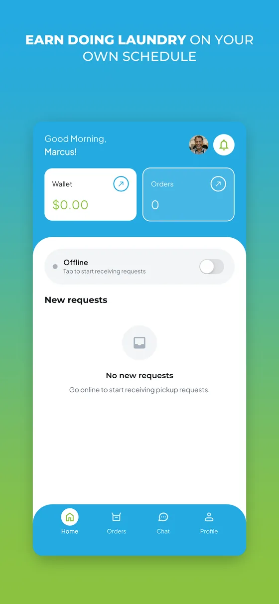

Sango Sports Lab
AI-assisted sports coaching that turns phone video into clear performance insights and a path to improvement.
Explore the product ↗Matthew Clements · Engineer & Architect
I turn complex problems into thoughtful software.
From AI on your phone to the systems behind it.
Principal Solution Architect · Founder, Sango Labs · Bothell, WA
Selected work
AI-assisted sports coaching that turns phone video into clear performance insights and a path to improvement.
Explore the product ↗
Two sides of a simpler laundry day. Socks. serves customers; Sockster gives pickup and delivery partners the tools to get the job done.
Explore the product ↗Personal AI on your own device. A native experience for private conversations and useful intelligence, even offline.
Explore the product ↗A shared point of reference for people and AI agents building together. Each handoff adds to the work that came before.
Explore the product ↗The person behind the products
My background is in enterprise telecom and cloud: national-scale deployments, technical roadmaps, and the work of getting engineering teams to a production release.
At Sango Labs, I take that same ownership into smaller products. I design the experience, write the code, build the infrastructure, and keep it running.
I’m especially interested in where AI meets the real world: measured motion, limited device memory, and systems people depend on.
Currently focused on
Working principles
Build around a real need and make the experience clear, useful, and approachable.
Thoughtful interfaces, useful feedback, and dependable behavior matter as much as the underlying technology.
Connect product design, engineering, and operations so the experience works beyond the first demo.
Design for maintenance, collaboration, and the people who will use or develop the product next.
Get in touch
I’m interested in forward-deployed engineering, AI solutions architecture, and products with a real problem to solve.
For product demos, collaboration, or a conversation about the work, get in touch.